In China Employee Termination: Pulse Readiness-Index Brief for Foreign Employers (2026 Hourly Run)
Key takeaways
- Foreign employers can reduce China termination risk by using a readiness index before release decisions.
- Readiness should be scored across five dimensions, not inferred from one legal review.
- The most common failure is still mismatch among route, evidence, communication, payroll, and governance closure.
- A score band model improves consistency in go/pause/escalate decisions across time zones.
- Legal depth supports confidence, but measurable readiness drives reliable execution.
Pulse opener: readiness beats speed
Many cross-border teams try to solve China termination risk by adding more review meetings. The better solution is usually a clearer readiness signal. Without a scoring model, teams rely on subjective language (“almost ready”, “close enough”), and decisions drift under deadline pressure. A readiness index creates a shared standard that legal, HR, payroll, and leadership can interpret the same way.
This run rotates to an index-based briefing. It is built for foreign operators who need concise, operationally useful decision logic first, with legal depth in appendix form.
Plain-language legal context first
In China, termination decisions are generally route-based under labor law and implementation regulations. In disputes, defensibility is often assessed through coherence: whether process records and actions consistently align with the claimed route.
For foreign teams, this means case readiness should be treated as a multi-factor condition, not a binary legal opinion.
Readiness index: 5 dimensions and action bands
Score each dimension from 0-20 (total 100).
Dimension 1 — Route clarity (0-20)
- 20: route and assumptions are explicit, stable, and approved.
- 10-15: route broadly defined but with unresolved assumptions.
- 0-5: route uncertain or internally disputed.
Dimension 2 — Evidence integrity (0-20)
- 20: critical facts have owner/source/verification status.
- 10-15: evidence mostly present but traceability gaps remain.
- 0-5: material facts unresolved or unowned.
Dimension 3 — Communication coherence (0-20)
- 20: legal and HR narratives fully aligned.
- 10-15: minor wording drift with correction pending.
- 0-5: material mismatch across employee-facing materials.
Dimension 4 — Settlement readiness (0-20)
- 20: payroll, IIT, and social insurance assumptions pre-validated.
- 10-15: one non-critical settlement dependency open.
- 0-5: unresolved material treatment questions near release.
Dimension 5 — Governance closure readiness (0-20)
- 20: retrieval test and closure ownership confirmed.
- 10-15: archive mostly complete but retrieval test pending.
- 0-5: closure planned without retrievability controls.
Action bands
- 85-100 (Go band): release with normal controls.
- 70-84 (Conditional band): release only with owner/date remediation on remaining gaps.
- 50-69 (Pause band): hold release; run cross-functional correction cycle.
- 0-49 (Escalate band): executive/legal escalation with explicit risk acceptance.
Practical implications for foreign operators
The readiness-index model improves decision quality because it turns abstract risk into measurable thresholds. It also improves governance communication: instead of saying “case is progressing,” teams can report score movement and which dimensions improved or deteriorated.
For multinational leadership, this makes resource allocation easier. Cases in Pause/Escalate bands can receive targeted legal/payroll support, while Go-band cases can proceed efficiently.
Operations module
A) SOP by role ownership
Legal: own route clarity score and assumption stability.
HR: own communication coherence and chronology integrity.
Payroll: own settlement readiness and tax-treatment verification.
Manager: follow approved communication boundaries only.
Vendor/EOR: own handoff continuity and unresolved-risk tracking.
B) Document checklist and score gates
Required artifacts:
- route-confidence memo,
- evidence index (owner/source/status),
- approved communication packet,
- settlement worksheet + tax notes,
- timestamped decision log,
- archive map + retrieval owner.
Gate rules:
- no release below 85 unless explicit conditional approval rule is documented,
- any dimension below 10 triggers automatic Pause/Escalate review,
- closure requires governance readiness >=15 and retrieval pass.
C) Exception pathways
Pathway A: route-score drop → legal revalidation and pause.
Pathway B: evidence-score drop → hold until ownership gaps close.
Pathway C: settlement-score drop → payroll/legal joint sign-off required.
Pathway D: local uncertainty impacts score → escalate with options/exposure range.
Pathway E: closure-score drop → reopen closure and remediate retrievability.
D) System controls and audit fields
Suggested fields:
readiness_total_scoreroute_scoreevidence_scorecoherence_scoresettlement_scoreclosure_scoreoverride_reason
Control standards:
- block release below configured threshold,
- immutable logs for score overrides,
- monthly trend analysis by score dimension and city/unit.
Common mistakes and prevention
Mistake: using index as a reporting artifact only
Prevention: tie release decisions directly to score bands.
Mistake: inflating scores under deadline pressure
Prevention: require dual sign-off on any score override.
Mistake: ignoring single-dimension failures
Prevention: enforce auto-pause when critical dimension drops below minimum.
Mistake: treating closure as administrative
Prevention: include retrieval readiness in final score gate.
Mistake: weak leadership cadence
Prevention: review score movement weekly and recurrence monthly.
What to watch next
Foreign operators should monitor which dimension most frequently blocks release. Recurrent low scores usually reveal structural process design gaps. Over time, the objective is not only higher average scores, but lower volatility and shorter time in Pause/Escalate bands.
Executive calibration and governance rhythm
For foreign leadership, index quality depends on calibration discipline. Teams should run a short calibration session at the start of each month to align how scores are assigned across legal, HR, and payroll. Without calibration, one unit may score conservatively while another scores optimistically, which makes cross-unit comparisons unreliable. Calibration can be simple: review 3-5 recent cases, compare scoring rationales, and agree threshold interpretations before the next cycle.
A governance rhythm also improves consistency. Weekly case reviews should focus on score changes and blocked dimensions, while monthly governance reviews should focus on recurrence trends and threshold effectiveness. If many cases sit in Conditional band for extended periods, thresholds or ownership design may need adjustment. If Escalate-band cases repeat in the same location, process redesign and local training should be prioritized.
FAQ
Is this readiness index legal advice?
No. It is an operational decision framework informed by legal and practitioner sources.
Can teams adjust scoring weights?
Yes, but route clarity, evidence integrity, and settlement readiness should remain heavily weighted.
What is the minimum viable version?
Track five dimensions and one overall action band.
Which score is most often underrated?
Governance closure readiness is often neglected until post-dispute.
Does this replace local counsel?
No. It complements local legal/payroll advice with measurable execution controls.
Is this applicable across all China locations?
Baseline model is broad, but local practice differences still require localized judgment.
Legal appendix (secondary depth)
1) Core legal anchors
The PRC Labor Contract Law and implementation regulations provide statutory basis for termination routes and obligations. SPC interpretations provide labor-dispute application context.
2) Practitioner and market synthesis
Practitioner sources consistently highlight route discipline and coherence controls. Market/payroll references reinforce settlement and tax handling as risk-critical elements.
3) Residual uncertainty
City-level practice differences and language nuances can affect edge-case outcomes; high-exposure matters require local professional advice.
Source-fit note for this run
This run maintained required source mix and rotated to a readiness-index structure to improve Pulse-style decision clarity. Repetitive scorecard language was consolidated into dimension scoring and action bands.
Disclaimer
This content is for informational purposes only and does not constitute legal, tax, payroll, accounting, or compliance advice. Employers should seek qualified local professional advice for case-specific decisions.
Sources
- National People's Congress. Labor Contract Law of the PRC (English text). Accessed 2026-02-28: http://www.npc.gov.cn/zgrdw/englishnpc/Law/2007-12/13/content_1384064.htm
- State Council. Implementation Regulations of the Labor Contract Law (Decree No. 535). Accessed 2026-02-28: https://www.gov.cn/gongbao/content/2008/content_1124615.htm
- Supreme People's Court. Interpretation (I) on Application of Labor Dispute Law. Accessed 2026-02-28: https://www.court.gov.cn/fabu/xiangqing/243981.html
- China Briefing. Employee Termination in China. Updated 2025-10-17, accessed 2026-02-28: https://www.china-briefing.com/news/employee-termination-in-china/
- Littler. Key Recent Developments in China's Employment Law. Published 2024-03-20, accessed 2026-02-28: https://www.littler.com/news-analysis/asap/key-recent-developments-chinas-employment-law-china-us-comparative-perspective
- PwC. PRC Individual Taxes on Personal Income (Tax Summaries). Accessed 2026-02-28: https://taxsummaries.pwc.com/peoples-republic-of-china/individual/taxes-on-personal-income
Need local employment support in China?
If you need a compliance-first partner for hiring, payroll, and risk controls in China, China-Payroll.com can help evaluate the right setup.
Image Prompt Pack
Create a 16:9 hero image for article title: 'In China Employee Termination: Pulse Readiness-Index Brief for Foreign Employers (2026 Hourly Run)'. Scene: global operations team evaluating workforce model options for China market entry. Include motifs: decision …